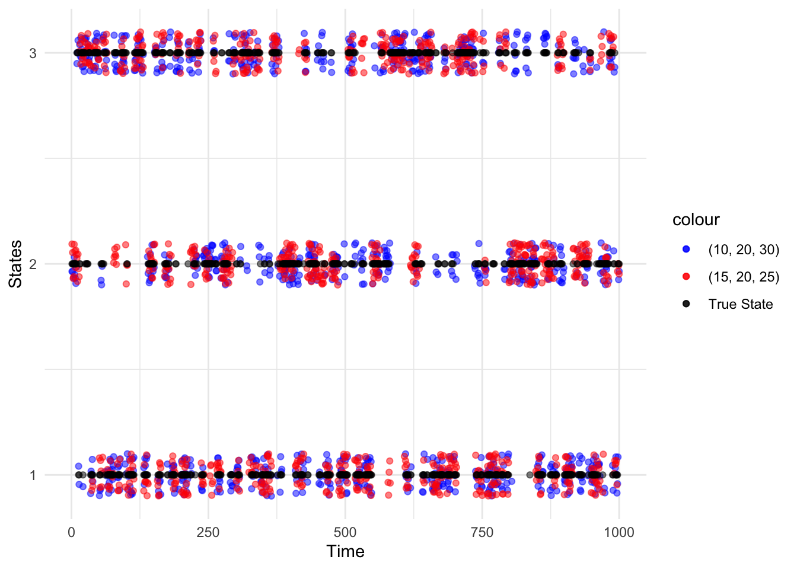

Chapter 6 Forecasting, Decoding, and State Prediction
6.1 Conditional Distribution
We derive the distribution of \(X_t\) conditioned on all other observations.
From Equation (4.1) and (4.2), it follows that for \(t=2, 3, \dots, T\), the conditional distribution is given by
\[\begin{align} \Pr(X_t = x|\boldsymbol{X}^{(-t)} = \boldsymbol{x}^{(-t)}) &= \frac{\Pr(\boldsymbol{X}^{(-t)} = \boldsymbol{x}^{(-t)}, X_t = x)}{\Pr(\boldsymbol{X}^{(-t)} = \boldsymbol{x}^{(-t)})} \\ &= \frac{\boldsymbol{\delta P}(x_1) \boldsymbol{B}_2 \cdots \boldsymbol{B}_{t-1} \boldsymbol{\Gamma P}(x) \boldsymbol{B}_{t+1} \cdots \boldsymbol{B}_T \boldsymbol{1'}}{\boldsymbol{\delta P} (x_1) \boldsymbol{B}_2 \cdots \boldsymbol{B}_{t-1} \boldsymbol{\Gamma} \boldsymbol{B}_{t+1} \cdots \boldsymbol{B}_T \boldsymbol{1'}}\\ & \propto \boldsymbol{\alpha}_{t-1} \boldsymbol{\Gamma P} (x) \boldsymbol{\beta'}_t \tag{6.1} \end{align}\]
where \(\boldsymbol{B}_t = \boldsymbol{\Gamma P} (x_t)\)
And for \(t=1\),
\[\begin{align} \Pr (X_1 = x|\boldsymbol{X}^{(-1)} = \boldsymbol{x}^{(-1)}) &= \frac{\boldsymbol{\delta P} (x_2) \boldsymbol{B}_2 \cdots \boldsymbol{B}_T \boldsymbol{1'}}{\boldsymbol{\delta I} \boldsymbol{B}_2 \cdots \boldsymbol{B}_T \boldsymbol{1'}}\\ & \propto \boldsymbol{\delta P} (x) \boldsymbol{\beta'}_1 \tag{6.2} \end{align}\]
where \(\boldsymbol{I}\) is the identity matrix
Note: By definition of \(\boldsymbol{B}_t\), it follows that \(\boldsymbol{\alpha}_t = \boldsymbol{\delta P} (x_1) \boldsymbol{B}_2 \cdots \boldsymbol{B}_t\) and \(\boldsymbol{\beta'}_t = \boldsymbol{B}_{t+1} \cdots \boldsymbol{B}_T \boldsymbol{1'}\)
Notice that \(\Pr(X_t = x|\boldsymbol{X}^{(-t)} = \boldsymbol{x}^{(-t)})\) is a ratio of the likelihoods of an HMM:
numerator: likelihood of the observations except that of observation \(x_t\) is replaced by \(x\)
denominator: likelihood of observations except that of obsservation \(x_t\) is treated as missing
6.1.1 As Mixtures of State-Dependent Probabilities
The conditional probabilities can be expressed as mixtures of the \(m\) state-dependent probability distributions.
\[\begin{align} & \Pr(X_t = x|\boldsymbol{X}^{(-t)} = \boldsymbol{x}^{(-t)})\\ & \propto \left(\alpha_{t-1} (1), \dots, \alpha_{t-1} (m) \right) \begin{pmatrix} \gamma_{11} & \cdots & \gamma_{1m}\\ \vdots & \ddots & \vdots\\ \gamma_{m1} & \cdots & \gamma_{mm} \end{pmatrix} \begin{pmatrix} p_1 (x) & \cdots & 0\\ \vdots & \ddots & \vdots\\ 0 & \cdots & p_m (x) \end{pmatrix} \begin{pmatrix} \beta_t (1)\\ \vdots\\ \beta_t (m) \end{pmatrix}\\ &= \left(\gamma_{11} \alpha_{t-1} (1) + \cdots + \gamma_{m1} \alpha_{t-1} (m), \cdots, \gamma_{1m} \alpha_{t-1} (1) + \cdots \gamma_{mm} \alpha_{t-1} (m) \right)\\ &\begin{pmatrix} p_1 (x) & \cdots & 0\\ \vdots & \ddots & \vdots\\ 0 & \cdots & p_m (x) \end{pmatrix} \begin{pmatrix} \beta_t (1)\\ \vdots\\ \beta_t (m) \end{pmatrix}\\ &= \left(\gamma_{11} \alpha_{t-1} (1) + \cdots + \gamma_{m1} \alpha_{t-1} (m), \cdots, \gamma_{1m} \alpha_{t-1} (1) + \cdots \gamma_{mm} \alpha_{t-1} (m) \right) \begin{pmatrix} p_1 (x) \beta_t (1)\\ \vdots\\ p_m (x) \beta_t (m) \end{pmatrix}\\ &= p_1 (x) \beta_t (1) \left(\gamma_{11} \alpha_{t-1} (1) + \cdots \gamma_{m1} (\alpha_{t-1} (m)) \right) + \cdots p_m (x) \beta_t (m) \left(\gamma_{1m} \alpha_{t-1} (1) + \cdots \gamma_{mm} (\alpha_{t-1} (m)) \right)\\ &= \sum_{i=1}^m p_i (x) \beta_t (i) \sum_{k=1}^m \gamma_{ki} \alpha_{t-1} (k)\\ & \equiv p_i (x) d_i (t) \end{align}\]
where \(d_i (t)\) is the product of the \(i\)th entry of the vector \(\boldsymbol{\alpha}_{t-1} \boldsymbol{\Gamma}\) and the \(i\)th entry of the vector \(\boldsymbol{\beta}_t\). For \(t=1\), it is the product of the \(i\)th entry of the vector \(\boldsymbol{\delta}\) and the \(i\)th entry of the vector \(\boldsymbol{\beta}_1\).
Note: It can be seen that \(d_i (t)\) corresponds to the above as
\[\begin{align} \beta_t (i) \sum_{k=1}^m \gamma_{ki} \alpha_{t-1} (k) &= \sum_{k=1}^m \Pr (C_t = i|C_{t-1} = k) \Pr(\boldsymbol{X}^{(-t)} = \boldsymbol{x}^{(-t)}, C_t = k) \Pr(\boldsymbol{X}_{t+1}^{T} = \boldsymbol{x}_{t+1}^{T}|C_t = i)\\ &= \left(\boldsymbol{\alpha}_{t-1} \boldsymbol{\Gamma} \right)_{1i} \left(\boldsymbol{\beta'}_t\right)_{i1}\\ & \equiv d_i (t) \end{align}\]
Hence,
\[\begin{equation} \Pr(X_t = x|\boldsymbol{X}^{(-t)} = \boldsymbol{x}^{(-t)}) = \sum_{i=1}^m w_i (t) p_i (x) \tag{6.3} \end{equation}\]
where \(w_i (t) = \frac{d_i (t)}{\sum_{j=1}^m d_j (t)}\)
6.2 Forecast Distributions
We now derive the forecast distributions of an HMM.
Let \(h\) be the forecast horizon.
The forecast distribution is given by
\[\begin{align} \Pr(X_{T+h} = x|\boldsymbol{X}^{(T)} = \boldsymbol{x}^{(T)}) &= \frac{\Pr(\boldsymbol{X}^{(T)} = \boldsymbol{x}^{(T)}, X_{T+h} = x)}{\Pr(\boldsymbol{X}^{(T)} = \boldsymbol{x}^{(T)})}\\ &= \frac{\boldsymbol{\delta P} (x_1) \boldsymbol{B}_2 \boldsymbol{B}_3 \cdots \boldsymbol{B}_T \boldsymbol{\Gamma}^h \boldsymbol{P} (x) \boldsymbol{1'}}{\boldsymbol{\delta P} (x_1) \boldsymbol{B}_2 \boldsymbol{B}_3 \cdots \boldsymbol{B}_T \boldsymbol{1'}}\\ &= \frac{\boldsymbol{\alpha}_T \boldsymbol{\Gamma}^h \boldsymbol{P} (x) \boldsymbol{1'}}{\boldsymbol{\alpha}_T \boldsymbol{1'}} \end{align}\]
Then writing \(\phi_T = \frac{\boldsymbol{\alpha_T}}{\boldsymbol{\alpha}_T \boldsymbol{1'}}\), it follows that
\[\Pr (X_{T+h} = x|\boldsymbol{X}^{(T)} = \boldsymbol{x}^{(T)}) = \phi_T \boldsymbol{\Gamma}^h \boldsymbol{P} (x) \boldsymbol{1'}\]
Notice, like Equation (6.1) and (6.2), the forecast distribution is also a ratio of likelihoods where the numerator corresponds to the likelihood of all observations except that of future observation \(x_{T+h}\) is replaced by \(x\) and the denominator corresponds to the likelihood of all observations except that of future observation \(x_{T+h}\) is treated as missing.
6.2.1 As Mixtures of State-Dependent Probabilities
The forecast distribution can be written as a mixture of the \(m\) state-dependent probability distributions.
\[\begin{equation} \Pr (X_{T+h} = x|\boldsymbol{X}^{(T) = \boldsymbol{x}^{(T)}}) = \sum_{i=1}^m \xi_i (h) p_i (x) \tag{6.4} \end{equation}\]
where the weight \(\xi_i (h)\) is the \(i\)th entry of the vector \(\boldsymbol{\phi \Gamma}^h\).
6.2.2 Forecast Distribution in the Limit
As the forecast horizon \(h\) increases, the forecast distribution converges to the marginal distribution of the stationary HMM
\[\lim_{h \rightarrow \infty} \Pr(X_{T+h} = x|\boldsymbol{X}^{(T)} = \boldsymbol{x}^{(T)}) = \lim_{h \rightarrow \infty} \boldsymbol{\phi}_T \boldsymbol{\Gamma}^h \boldsymbol{P} (x) \boldsymbol{1'} = \boldsymbol{\delta^*} \boldsymbol{P} (x) \boldsymbol{1'}\]
where \(\boldsymbol{\delta^*}\) (temporarily) denotes the stationary distribution of the MC.
The limit follows from the observation that for any non-negative (row) vector \(\boldsymbol{\eta}\), whose entries add to 1, the vector \(\boldsymbol{\eta \Gamma}^h\) approaches the stationary distribution of the MC as \(h \rightarrow \infty\) provided that the MC is irreducible and aperiodic.
6.3 Decoding
6.3.1 Local Decoding
Local decoding refers to determining at a particular time point \(t\), the most likely state is given the sequence of observations.
By Equation (4.11) and (4.12),
\[\begin{align} \Pr(C_t = i|\boldsymbol{X}^{(T)}= \boldsymbol{x}^{(T)}) &= \frac{\Pr(C_t = i, \boldsymbol{X}^{(T)}= \boldsymbol{x}^{(T)})}{\boldsymbol{X}^{(T)}= \boldsymbol{x}^{(T)}}\\ &= \frac{\alpha_t (i) \beta_t (i)}{L_T} \tag{6.5} \end{align}\]
Then for each \(t \in \{1, \dots, T\}\), the most probable state \(i_t^*\) given the observations is defined as
\[\begin{equation} i_t^* = \text{argmax}_{i=1, \dots, m} \Pr(C_t = i|\boldsymbol{X}^{(T)}= \boldsymbol{x}^{(T)}) \end{equation}\]
That is, the most likely state for each \(t\) is determined by maximizing the conditional probability \(\Pr(C_t = i|\boldsymbol{X}^{(T)}= \boldsymbol{x}^{(T)})\).
6.3.2 Global Decoding
Global decoding refers to determining the most likely sequence of states given the sequence of observations.
That is, determining the sequence of states \(c_1, c_2, \dots, c_T\) which maximizes the conditional probability
\[\begin{align} \Pr(\boldsymbol{C}^{(T)}=\boldsymbol{c}^{(T)}|\boldsymbol{X}^{(T)}=\boldsymbol{x}^{(T)}) \tag{6.6} \end{align}\]
or equivalently, maximizing
\[\Pr(\boldsymbol{C}^{(T)}, \boldsymbol{X}^{(T)}) = \delta_{c_1} \prod_{t=2}^T \gamma_{c_{t-1}}, c_t \prod_{t=1}^T p_{c_t} (x_t)\]
Instead of maximizing Equation (6.6) over all possible state sequences by brute force (\(m^T\) computations), we can use the Viterbi algorithm (\(T \times m\) computations)
Define
\[\xi_{1i} = \Pr(C_1 = i, X_1 = x_1) = \delta_i p_i (x_1)\]
and, for \(t = 2, 3, \dots, T\),
\[\xi_{ti} = \max_{c_1, c_2, \dots, c_{t-1}} \Pr (\boldsymbol{C}^{(t-1)} = \boldsymbol{c}^{(t-1)}, C_t = i, \boldsymbol{X}^{(t)} = \boldsymbol{x}^{(t)})\]
Then the probabilities \(\xi_{tj}\) satisfies the recursion, for \(t=2, 3, \dots, T\) and \(j=1, 2, \dots, m\):
\[\begin{equation} \xi_{tj} = \left(\max_i (\xi_{t-1, i} \gamma_{ij} )\right) p_j (x_t) \tag{6.7} \end{equation}\]
The required maximizing sequence of states \(i_1, i_2, \dots , i_T\) can then be determined recursively from
\[\begin{equation} i_T = \text{argmax}_{i=1, \dots, m} \xi_{Ti} \tag{6.8} \end{equation}\]
and, for \(t=T-1, T-2, \dots, 1\), from
\[\begin{equation} i_t = \text{argmax}_{i=1, \dots, m} \left(\xi_{ti} \gamma_{i, i_{t+1}} \right) \tag{6.9} \end{equation}\]
6.4 State Prediction
Given the observations \(x_1, \dots, x_T\), the following set of statements can be made about future, present, and past states (respectively):
\[\begin{align} L_T \Pr(C_t = i|\boldsymbol{X}^{(T)} = \boldsymbol{x}^{(T)}) &= \begin{cases} \boldsymbol{\alpha}_T \boldsymbol{\Gamma}^{t-T} \boldsymbol{e'}_i & \text{for t > T} & \qquad{\text{state prediction}}\\ \alpha_T (i) & \text{for t =T} & \qquad{\text{filtering}}\\ \alpha_t (i) \beta_t (i) & \text{for 1 $\leq$ t $\leq T$} & \qquad{\text{smoothing}} \end{cases} \end{align}\]
where \(\boldsymbol{e}_i = (0, \dots, 0, 1, 0, \dots, 0)\) has a one in the \(i\)th position only.
The state prediction can be restated as, for \(i=1, 2, \dots, m\)
\[\begin{align} \Pr(C_{T+h} = i|\boldsymbol{X}^{(T)}) = \boldsymbol{x}^{(T)}) &= \frac{1}{L_T} \boldsymbol{\alpha}_T \boldsymbol{\Gamma}^h \boldsymbol{e'}_i\\ &= \phi_T \boldsymbol{\Gamma}^h \boldsymbol{e'}_i \end{align}\]
where \(\phi_T = \frac{\boldsymbol{\alpha}_T}{{\boldsymbol{\alpha_T1'}}}\)
As \(h \rightarrow \infty\), \(\phi_T \boldsymbol{\Gamma}^h\) converges to the stationary distribution of the MC and so \(\Pr(C_{T+h} = i|\boldsymbol{X}^{(T)})\) converges to the \(i\)th element.
6.5 Exercises
Prove the recursion (6.7) \[\xi_{tj} = \left(\max_i (\xi_{t-1, i} \gamma_{ij} )\right) p_j (x_t)\]
- Using the same sequence of random numbers in each case, generate sequences of length 1000 from the Poisson-HMMs with
\[\boldsymbol{\Gamma} = \begin{pmatrix}0.8 & 0.1 & 0.1\\0.1 & 0.8 & 0.1\\0.1 & 0.1 & 0.8\end{pmatrix}\] and
\((i)\) \(\boldsymbol{\lambda} = (10, 20, 30)\) and \((ii)\) \(\boldsymbol{\lambda} = (15, 20, 25)\). Keep a record of the sequence of states, which should be the same in \((i)\) and \((ii)\) .
Use the Viterbi algorithm to infer the most likely sequence of states in each case, and compare these two sequences to the ‘true’ underlying sequence, i.e. the generated one.
What conclusions do you draw about the accuracy of the Viterbi algorithm in this model?
- Find the joint distribution \(X_{T+1}\) and \(X_{T+2}\), given \(\boldsymbol{X}^{(T)}\).
6.6 Solutions
Exercise 1
Let \(t=2, 3, \dots, T\) and \(j = 1, 2, \dots, m\).
Then
\[\begin{align} \xi_{tj} &= \max_{c_1, \dots, c_{t-1}} \{ \Pr (\boldsymbol{C}^{(t-1)} = \boldsymbol{c}^{(t-1)}, C_t = j, \boldsymbol{X}^{(t)} = \boldsymbol{x}^{(t)}) \}\\ &= \max_{c_1, \dots, c_{t-1}} \{\Pr(\boldsymbol{C}^{(t-1)} = \boldsymbol{c}^{(t-1)}, \boldsymbol{X}^{(t-1)} = \boldsymbol{x}^{(t-1)})\\ & \qquad{} \qquad{} \qquad{} \Pr(C_t=j|C_{t-1} = i) \Pr(X_t = x_t|C_t = j)\} \qquad{\text{by Equation 5.4}}\\ &= \max_{c_{t-1}} \{ \{\max_{c_1, \dots, c_{t-2}} \{\Pr(\boldsymbol{C}^{(t-2)} =\boldsymbol{c}^{(t-2)}, C_{t-1} = c_{t-1} , \boldsymbol{X}^{(t-1)} = \boldsymbol{x}^{(t-1)} ) \} \Pr(C_t = j|C_{t-1} = i) \}\\ & \qquad{} \qquad{} \Pr(X_t = x_t | C_t = j) \qquad{\text{by Markov property}}\\ &= \max_i \{ \max_{c_1, \dots, c_{t-2}} \{ Pr(\boldsymbol{C}^{(t-2)} = \boldsymbol{c}^{(t-2)}, C_{t-1} = i, \boldsymbol{X}^{(t-1)} = \boldsymbol{x}^{(t-1)} )\} \Pr (C_t = j|C_{t-1} = i) \}\\ & \qquad{} \Pr(X_t = x_t|C_t = j)\\ &= \max_i \{\xi_{ti} \gamma_{ij}\} p_j (x_t) \end{align}\]
Exercise 2
We can use pois.HMM.generate_sample (see Major Earthquake Analysis bootstrapping) to generate the sequences.
pois.HMM.generate_sample <- function(ns,mod)
{set.seed(548)
mvect <- 1:mod$m
state <- numeric(ns)
state[1] <- sample(mvect,1,prob=mod$delta)
for (i in 2:ns) state[i] <- sample(mvect,1,prob=mod$gamma[state[i-1],])
x <- rpois(ns,lambda=mod$lambda[state])
return(list(x = x, state = state))
}Note: We added set.seed in the function so that the sequence of states is the same for both parts \((i)\) and \((ii)\).
Now generating the samples
# Initial values
mod1 <- list(m=3,
lambda=c(10, 20, 30),
gamma = matrix(c(0.8,0.1,0.1,0.1,0.8,0.1,0.1,0.1,0.8),3,3,byrow=TRUE),
delta= rep(1, 3)/3
)
mod2 <- list(m=3,
lambda=c(15, 20, 25),
gamma = matrix(c(0.8,0.1,0.1,0.1,0.8,0.1,0.1,0.1,0.8),3,3,byrow=TRUE),
delta= rep(1, 3)/3
)
# Generate sample
## (i)
poishmm_sample_i = pois.HMM.generate_sample(1000, mod1)
## (ii)
poishmm_sample_ii = pois.HMM.generate_sample(1000, mod2)Now applying the Viterbi algorithm (see Major Earthquake Analysis bootstrapping),
### Global decoding by the Viterbi algorithm
pois.HMM.viterbi<-function(x,mod)
{
n <- length(x)
xi <- matrix(0,n,mod$m)
foo <- mod$delta*dpois(x[1],mod$lambda)
xi[1,] <- foo/sum(foo)
for (i in 2:n)
{
foo<-apply(xi[i-1,]*mod$gamma,2,max)*dpois(x[i],mod$lambda)
xi[i,] <- foo/sum(foo)
}
iv<-numeric(n)
iv[n] <-which.max(xi[n,])
for (i in (n-1):1)
iv[i] <- which.max(mod$gamma[,iv[i+1]]*xi[i,])
return(iv)
}# Viterbi algorithm
v1 <- pois.HMM.viterbi(poishmm_sample_i$x, mod1)
v2 <- pois.HMM.viterbi(poishmm_sample_ii$x, mod2)
# Plot the differences
library(ggplot2)
df <- data.frame(v1, v2, true_state = poishmm_sample_i$state, t = seq(1,1000))
ggplot(df) +
geom_point(aes(x = t, y = v1, color = "Variable 1"), alpha = 0.5, position=position_jitter(width = 0.1, height = 0.1)) +
geom_point(aes(x = t, y = v2, color = "Variable 2"), alpha = 0.5, position=position_jitter(width = 0.1, height = 0.1)) +
geom_point(aes(x = t, y = true_state, color = "Variable 3"), alpha = 0.5) +
scale_color_manual(values = c("blue", "red", "black"),
labels = c("(10, 20, 30)", "(15, 20, 25)", "True State")) +
scale_y_continuous(breaks = c(1, 2, 3)) +
theme_minimal() +
labs(x = "Time", y = "States")
Note: Jitter was added to the generated sequences to separate the overlap in points and better see how they compare to the true state.
Applying the Viterbi algorithm to the generated Poisson-HMM with \(\boldsymbol{\lambda} = (10, 20, 30)\) is more similar to the true sequence than \(\boldsymbol{\lambda} = (15, 20, 25)\). The decoded sequence for \(\boldsymbol{\lambda} = (15, 20, 25)\) tends to be in state 2, with few transitions to the other states.
The Viterbi algorithm is more accurate when the states are more separated. Part \((i)\) resulted in \(89.8\%\) correctly decoded states whereas part \((ii)\) resulted in \(73.2\%\).
# Compare
length(which(v1 == poishmm_sample_i$state))## [1] 898length(which(v2 == poishmm_sample_ii$state))## [1] 732Question 3
\[\begin{align} \Pr(X_{T+1} = v, X_{T+2} = w|\boldsymbol{X}^{(T)} &= \boldsymbol{x}^{(T)})\\ &= \frac{\Pr(\boldsymbol{X}^{(T)} = \boldsymbol{x}^{(T)},X_{T+1} = v, X_{T+2} = w)}{\Pr(\boldsymbol{X}^{(T)} = \boldsymbol{x}^{(T)}}\\ &= \frac{\boldsymbol{\delta P} (x_1) \boldsymbol{B}_2 \boldsymbol{B}_3 \cdots \boldsymbol{B}_T \boldsymbol{\Gamma P} (v) \boldsymbol{\Gamma P} (w) \boldsymbol{1'}}{\boldsymbol{\delta P} (x_1) \boldsymbol{B}_2 \boldsymbol{B}_3 \cdots \boldsymbol{B}_T \boldsymbol{1'}}\\ &= \frac{\boldsymbol{\alpha}_T \boldsymbol{\Gamma P} (v) \boldsymbol{\Gamma P} (w) \boldsymbol{1'}}{\boldsymbol{\alpha}_T \boldsymbol{1'}} \end{align}\]
Then writing \(\phi_T = \frac{\boldsymbol{\alpha}_T}{\boldsymbol{\alpha}_T \boldsymbol{1'}}\)
\[\Pr(X_{T+1} = v, X_{T+2} = w|\boldsymbol{X}^{(T)} = \boldsymbol{x}^{(T)}) = \phi_T \boldsymbol{\Gamma P} (v) \boldsymbol{\Gamma P} (w) \boldsymbol{1'}\]